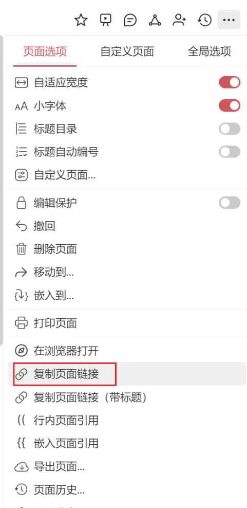
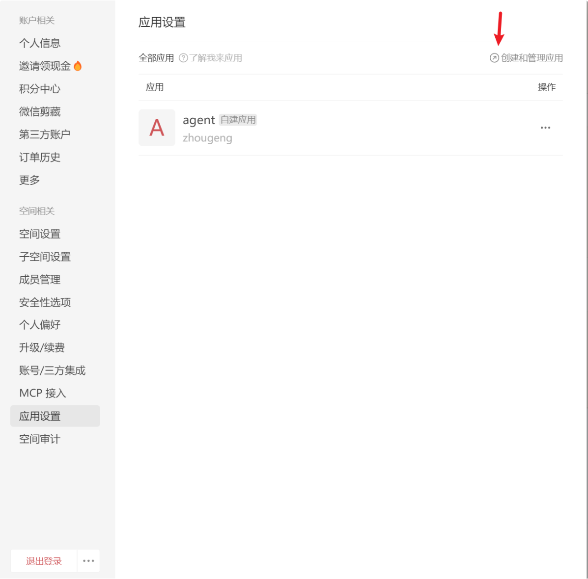
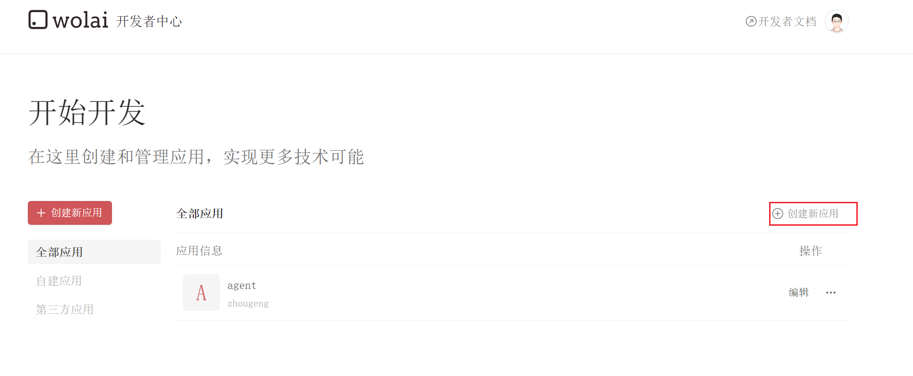
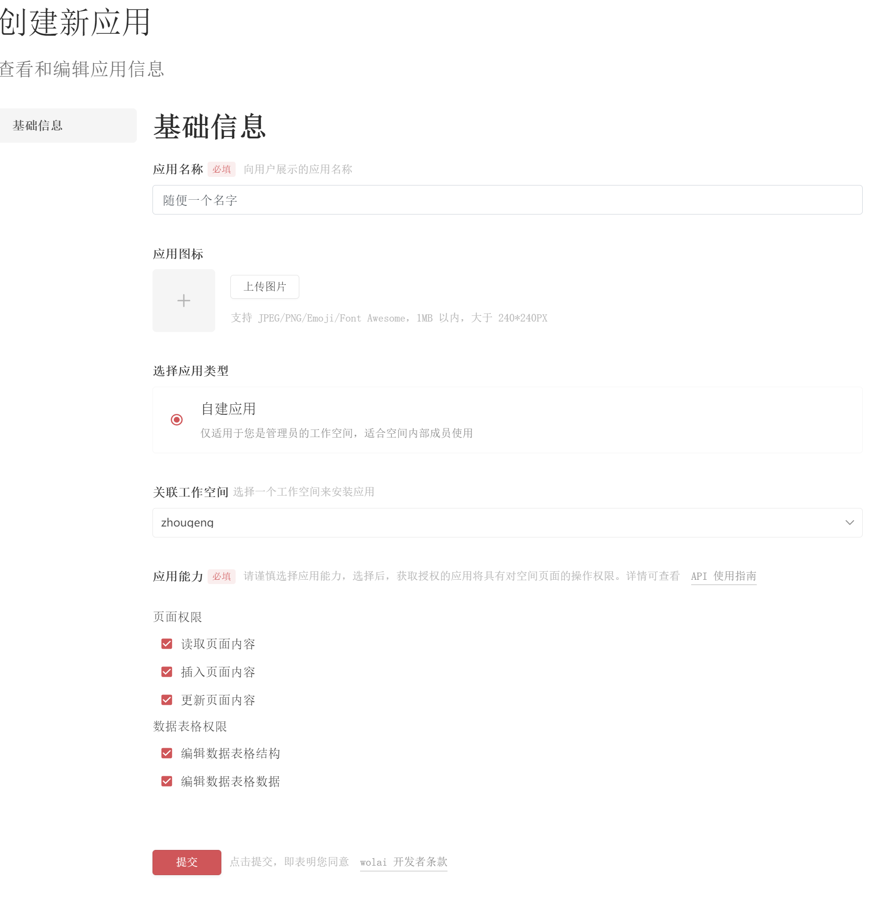
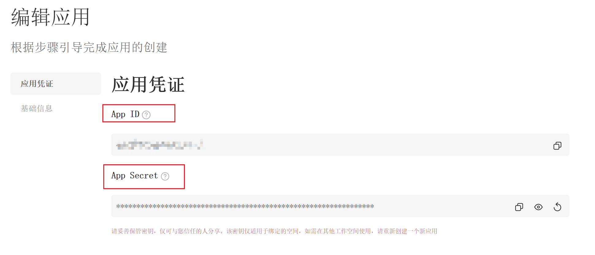
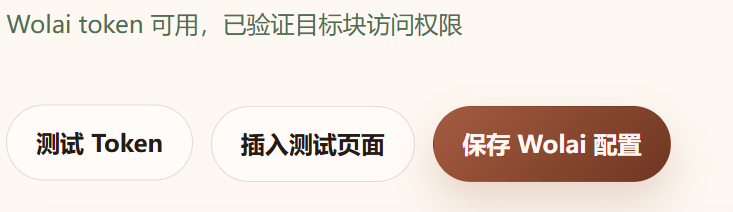

这篇教程适合谁
如果你和我一样，对笔记系统没有太高要求，只是想把 CiteBox 里整理出来的一些结果顺手保存到 Wolai，这个配置方式就很合适。它不是一套复杂的知识管理方案，而是一个稳定、够用、维护成本低的同步出口。
后面再决定是否扩展流程，不需要一开始就把笔记系统设计得很重。
先准备这 3 个值
在 CiteBox 的 Wolai 配置里，你只需要填写三项内容。最容易的是 OpenAPI 地址，最常抄错的是目标页面 ID，最麻烦的是 Wolai Token。
Wolai Token
通过你创建的 Wolai 应用换取，用来让 CiteBox 调用 Wolai OpenAPI。
OpenAPI 地址
最简单，直接填写 https://openapi.wolai.com。
目标页面 ID
也就是你希望 CiteBox 往哪个 Wolai 页面下面继续插入内容。

目标页面 ID 怎么取
这一步不复杂。打开你想接收笔记的 Wolai 页面，点击页面右上角复制当前页面链接，然后取链接最后一段即可。
k1Qgi1J2L9vWBQkkJz8j82 就是你要填写的目标页面 ID。

parent_block_id。填对了，后续测试 Token 时也会顺便验证当前 Token 是否有权访问这个页面。Wolai Token 是最难拿到的部分
要先在 Wolai 里创建一个应用，拿到 App ID 和 App Secret，然后再用它们调用 Wolai OpenAPI 的创建 Token 接口。
打开个人设置里的应用设置
先点击左上角自己的头像，进入个人设置，然后选择“应用设置”，再点击“创建和管理应用”。

创建一个新应用
进入应用管理页面后，点击“创建新应用”。

把权限全部勾选上
为了先把集成跑通，权限可以直接全勾。后面如果你想做更细的权限收缩，再回头精简。

记下 App ID 和 App Secret
应用创建成功后，记住这两个值。下一步在终端里换取 Token 时就要用到它们。

在终端里换取 Wolai Token
下面这段命令直接调用 Wolai 的创建 Token 接口。你只需要把自己的应用 ID 和应用密钥填进去即可。
https://openapi.wolai.com/v1/token。curl --location --request POST 'https://openapi.wolai.com/v1/token' \
--header 'Content-Type: application/json' \
--data-raw '{
"appId": "填入你的应用ID",
"appSecret": "填入你的应用密钥"
}'如果你在窄屏上看这页，直接点上面的“复制命令”会更省事；这个代码块现在也支持自动换行。
Wolai Token 输入框即可。最后一步：测试通过，再保存配置
拿到 Token 后，回到 CiteBox 设置页，把三项都填好，先点“测试 Token”。测试通过后，再点击“保存 Wolai 配置”。
https://openapi.wolai.com。
这样配置完，就可以开始用了
对于“只想把结果稳稳存进笔记里”这个目标来说，这套 Wolai 配置已经足够。先把链路跑通，比一开始追求完美配置更重要。
返回首页